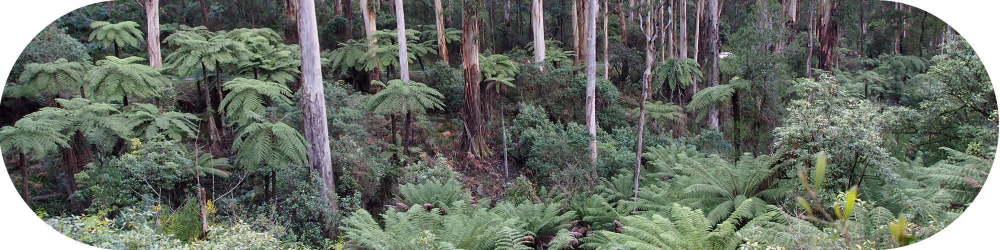
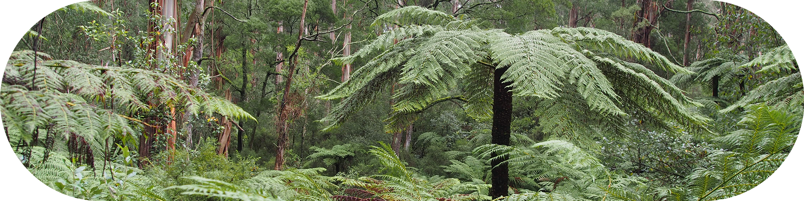

'Sherbrooke Forest - its flora and history' Second Edition is a concise history of the forest and an excellent plant identification guide for locals and visitors to the forest. Produced by FOSF, it includes an excellent segment on environmental weeds and includes an excellent map of the forest along with colour-coding to describe the areas of "wet forest", "damp forest", and "cool temperate rain forest".
You can obtain your copy at:
The Book Barn (in Burwood Highway, Belgrave)
Grant’s on Sherbrooke (the kiosk at Grant’s Picnic Ground)
The Dandenong Ranges Botanic Park (formerly National Rhododendron Garden) and
Karwarra Native Plant Garden, Mt Dandenong Rd, Kalorama
ISBN: 0-646-38720-0
Pages: 91
Price: $20
Other publications produced by FOSF, such as 'Friends of Sherbrooke Forest Flora Survey Results 1984 - 2001' and 'History of the Friends of Sherbrooke Forest 1980 - 2020' are available for purchase upon request.
The Friends of Sherbrooke Forest blogspot is no longer updated, but remains a great resource. There are numerous links, reports and pictures of the flora and fauna present in the forest as well as survey methods and other articles of interest.